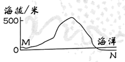
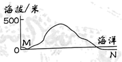
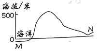
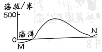
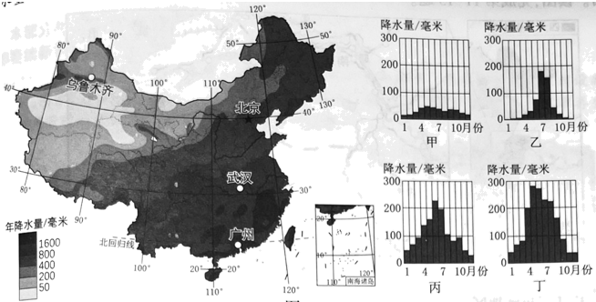

2023年北京中考地理 第4题 解析
4. 沿MN绘制的地形剖面示意图是（ ）
A.

B. 
C.

D. 
【答案】3. B 4. A
【解析】
【3题详解】
读图可知，图中等高距为100米，①地海拔为400-500米，A错误。②地等高线向高处凸出，地处山谷，发育河流，B正确。图中没有指向标和经纬网，可以根据“上北下南左西右东”来确定方向，在③地向东眺望，被①地阻挡，不能看到大海，C错误。④地等高线稀疏，坡度小，D错误。故选B。
【4题详解】
读沿MN绘制的地形剖面示意图，M处为陆地，海拔较高，N处为海洋，海拔低，排除CD；MN穿越山峰，海拔高于500米，排除B，故选A。
【点睛】等高线闭合，且数值从中心向四周逐渐降低的为山峰；等高线向海拔较低处凸出的为山脊，也叫分水岭；等高线向海拔较高处凸出的为山谷，发育河流；等高线重合的为陡崖，适合攀岩运动；位于两个山顶之间，地势较为低洼，是鞍部。等高线密集，坡度陡，攀爬难度大；等高线稀疏，坡度平缓，攀爬难度小。
分析降水量分布状况是认识区域差异的重要内容。图为中国年降水量分布和国地降水量柱状图。读图，完成下面小题。
